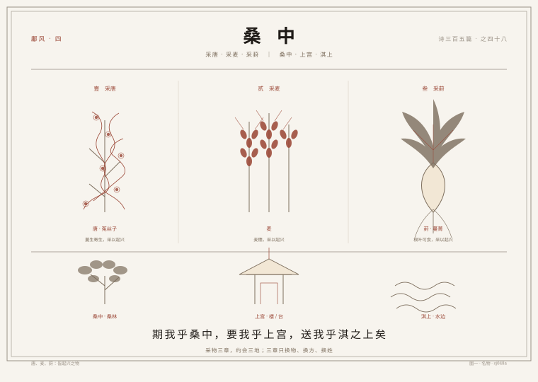
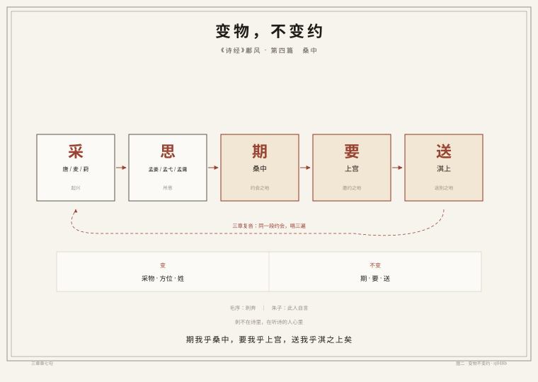

第四十八篇 桑中
鄘风 · 之四 SJ048
朗读 · 普通话
依经文原文朗读，章次不读出；配古琴底乐，不改速、不加拖腔。全库同一音色（豆包 TTS），非播音员录制。
一 解题
诗三判：
- 谁在说：一个在沬乡采唐的男子，自道与所思之人相期、相会、相送。三章所思，是姜、弋、庸三家的长女；旧注各指一人，今人或谓一人三易姓，人数存疑。
- 说什么事：采唐、采麦、采葑三起；地点在沬乡、沬北、沬东；所思在孟姜、孟弋、孟庸；约在桑中，邀至上宫，送至淇上。三章只换采物、方位、姓，期、要、送不变。
- 为何编在此：前三篇写卫宫一人一事：守、讳、刺；此篇转写「桑间」之风，由一宫及一国。「桑中」后来成了私奔偷情的典故，《左传·成公二年》已有「有桑中之喜」的话。
《毛序》：「《桑中》，刺奔也。卫之公室淫乱，男女相奔，至于世族在位，相窃妻妾，期于幽远，政散民流，而不可止。」
朱子《诗集传》：「卫俗淫乱，世族在位，相窃妻妾，故此人自言将采唐于沬，而与其所思之人相期会迎送如此也。」
毛序说「刺」，朱子说「此人自言」：一从编诗者的用法说，一从诗中的口吻说。本库两存：诗只写采、思、期、要、送，不写「刺」字；正因为它唱得轻快，毛序的「不可止」才显得重。
二 经文
第一章
爰采唐矣？沬之鄉矣。云誰之思？美孟姜矣。期我乎桑中，要我乎上宮，送我乎淇之上矣。
第二章
爰采麥矣？沬之北矣。云誰之思？美孟弋矣。期我乎桑中，要我乎上宮，送我乎淇之上矣。
第三章
爰采葑矣？沬之東矣。云誰之思？美孟庸矣。期我乎桑中，要我乎上宮，送我乎淇之上矣。
分章：三章，章七句。
章末韵：
- 一章：唐、乡、姜（阳部）；中、宫（冬部）；上（阳部）。
- 二章：麦、北、弋（职部）；中、宫（冬部）；上（阳部）。
- 三章：葑、东、庸（东部）；中、宫（冬部）；上（阳部）。
三 韵读
| 一 |
唐、乡、姜 |
阳部；末「上」亦阳部 |
| 二 |
麦、北、弋 |
职部；末「上」阳部 |
| 三 |
葑、东、庸 |
东部；末「上」阳部 |
三章复唱「中、宫」，冬部自叶；「上」阳部。一章「上」与主韵合，二、三章换韵后独立。「矣」之部，不入韵。三章各换一韵：阳—职—东；复唱部分另成一节。
四 字义与名物
字义
- 爰——于焉、在哪里；一说「于何」。
- 唐——菟丝子，一名蒙，蔓生寄生；采以起兴。
- 沬（mèi）——卫邑，纣都朝歌，在今河南淇县南。沬之乡、沬之北、沬之东，指沬邑的乡、北、东。
- 云——语助；云谁之思，即「思谁」。
- 孟——长，排行最长。姜、弋、庸，皆姓。孟姜，姜家长女；不是「孟姜女」传说。
- 期——约会。要（yāo）——邀。送——送行。
- 桑中——桑林之中；毛传「所期之地」，朱子谓「沬乡之中小地名」。
- 上宫——楼、台、邑中地名。《孟子》「馆于上宫」，赵岐注「楼也」；王应麟引《通典》卫县有上宫台。不是必指纣王宫殿。
- 淇——卫水。之上，水边、淇水口。
- 麦——麦。葑（fēng）——蔓菁、芜菁，根叶可食。
- 美——美丽。美孟姜，美丽的姜家长女。
名物
- 唐 / 麦 /
葑——三种采物：唐是菟丝子，麦是麦穗，葑是蔓菁；皆起兴，不是实写农事。
- 桑中 / 上宫 /
淇上——三个约会地点：桑林、楼台、淇水边；都在沬邑附近。
- 沬乡 / 沬北 /
沬东——沬邑的三个方面，不是三个国。
五 今译
第一章
到哪里采菟丝？到沬邑的乡里。心里想的是谁？美丽的姜家长女。她约我在桑中，邀我到上宫，送我到淇水边。
第二章
到哪里采麦？到沬邑的北边。心里想的是谁？美丽的弋家长女。她约我在桑中，邀我到上宫，送我到淇水边。
第三章
到哪里采蔓菁？到沬邑的东边。心里想的是谁？美丽的庸家长女。她约我在桑中，邀我到上宫，送我到淇水边。
译注：「孟」译长女；「孟姜」不译「孟姜女」；「上宫」保留；「淇之上」译淇水边；三章「她」随姓而换，人数不坐实。
六 章旨
一章：采唐起兴，思在沬乡。
由采物问到所思，由所思转到期、要、送；一章已把三段唱完。
二章：换采麦、换沬北、换孟弋，期、要、送不变。
不是换事，是换境再唱；三章复沓由此成立。
三章：换采葑、换沬东、换孟庸，仍归三段。
唱完仍不落地，只有过程，没有结果。
三章合看：变物，不变约。
三章复沓，把同一段私约唱成风气；刺在言外。
七 诗教
- 兴：采唐、采麦、采葑，是兴。先言采，后言思；采物与所思没有直接关系，只借来起头。兴在起头，不在比喻。
- 观：可观「桑间」之风。约会不在私室，在桑中、上宫、淇上；这是一套民间男女的交往地理。也可观「政散民流」：礼制失序时，私约成了常态。
- 群：可与被一首歌唱中的人同群；也可与把私情唱成公共事件的群体同群。诗不揭私，只反复唱「期、要、送」。
- 怨：怨不在骂，在重复。三章不变，越唱越显得这件事不可止；毛序说「政散民流而不可止」，朱子说「此人自言」——怨在言外。
八 分寸与边界
- 不可只当爱情诗、约会诗。旧序刺奔，朱子自道；两读并存。只读甜蜜，便丢「桑间」之戒。
- 不可把三章三姓坐成一人。旧注各指列国之长女；今人或谓一人三易姓。人数存疑，不可强合。
- 不可把「上宫」坐成纣王宫殿、固定一地。旧说楼名、台、地名；只作约会之地。
- 不可把「采唐、采麦、采葑」当实写农事。三者是起兴，不是采集中记录。
- 不可把「刺奔」当道学骂人。诗只写期、要、送，刺在言外；也不可反过来把它当纯情歌。
九 存疑
- 诗旨与旧说：毛序主刺奔；朱子说「此人自言」，后人或以「淫者自作」目之；今人或以为爱情诗。本库取「自道其情，刺在言外」，两存。
- 文字异文：「沬」或作「沫」；「上宫」或作「上官」；「孟弋」的「弋」，旧注只作姓解，未详其国。今从毛诗底本。
- 名物歧解：「唐」为菟丝子，一名蒙、唐蒙；「葑」为蔓菁（芜菁），旧注或训「须」，名同实异；「上宫」为楼、台、地名，一说纣王宫殿旧址；「桑中」为桑林，一说是沬乡小地名。本库从毛传、朱子为主，存异说。
- 年代与作者：诗无作者。毛序系卫公室；朱子说「卫俗」，未必一人一时。「桑中」在《左传·成公二年》已成典故，可知其名早行。
- 编次之疑：为何次《君子偕老》？前三篇写卫宫一人一事，此篇转写「桑间」之风；由宫室到国俗，可能因类聚，也可能别有用意。《鄘风》篇次未必有严密义例。
十 跨典
- 《礼记·乐记》：「桑间濮上之音，亡国之音也。」「桑间」与「桑中」同一类目；此篇正是「桑间」之风的样本。
- 《左传·成公二年》：申叔跪谓巫臣「有桑中之喜，宜将窃妻以逃者也」。「桑中」已成私奔偷情的典故；诗中的期、要、送，正是这套典故的底子。
- 《鄘风·墙有茨》《君子偕老》：前三篇写卫宫一人一事，此篇转写「桑间」之风；由一宫到一国。讳、刺之后，忽然放开唱私约，反差最大。
- 《邶风·静女》：「静女其姝，俟我于城隅。」一在城隅，一在桑中；都是私约，静女写得俏，桑中唱得复。
- 《卫风·氓》：「送子涉淇，至于顿丘。」同以淇水为送别之地；一写婚变，一写私约，可对读。
- 《孟子·滕文公下》：「不待父母之命、媒妁之言，钻穴隙相窥，逾墙相从，则父母国人皆贱之。」此篇的期、要、送，正是「不待父母之命」的文学版。
十一 双卡与图
双卡五对：
| 桑中（沬乡约会之地） |
桑林中的普通采桑（坐实） |
| 上宫（楼 / 台 / 地名） |
纣王宫殿（坐实） |
| 孟姜 / 弋 / 庸（贵族长女） |
孟姜女（传说人物，混同） |
| 三章三姓（旧注各指一人） |
必是一人三易姓（强合） |
| 刺奔（编诗者的读法） |
道学骂人 / 纯情歌（两偏） |

图一 · 采唐、采麦、采葑；桑中、上宫、淇上 名物图

图二 · 变物，不变约 义理图
读图三处：
- 三采物：图一左格画菟丝子缠枝，中格画麦穗，右格画蔓菁根叶；三者是起兴，不是农事记录。
- 三地点：图一下排画桑林、楼台、水边；桑中是桑林，上宫是楼台、邑中地名，淇上是淇水边。三个地点，一套私约。
- 变与不变：图二把「采—思—期—要—送」拉成五步；三章换采物、方位、姓，不换期、要、送。虚线回路写「三章复沓」。